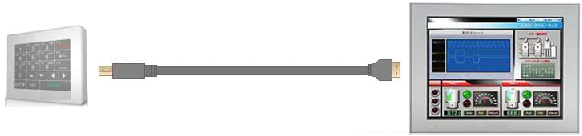

|
|
|
|
|
|
|
|
The Harmony USB keyboard provides physical function keys for repetitive operations and an alphanumeric keypad for quick data input. The keyboard is rugged, portable and compact, and is a practical solution for entering data and for operating in harsh environments. Unlike using a built-in keyboard available on some target machines, the Harmony USB keyboard does not take up panel display space when entering data. For a list of target machines that support the Harmony USB keyboard, see Appendix 5, Hardware Specifications.
The Harmony USB keyboard connects to the target machine, using a USB cable that connects to the keyboard's M22 port and the target machine's USB port.

When you connect the Harmony USB keyboard to the target machine, it interacts only with the target machine it is connected to. For example, when the Harmony USB keyboard is connected to a target machine which also has a Web Gate connection, the keyboard will only interact with the target machine and will have no effect on the Web Gate display or entry of values.
The Harmony USB keyboard can work in parallel with a built-in keypad, a system popup keypad or toolchest keypad, or the USB standard keyboard. You can press keys on either keypads and be able to enter data.
The Harmony USB keyboard has two modes: Function Key Mode and Entry Mode. The Entry Mode is used when you are using numeric displays or string displays. For more information on how to define function keys, see Section 24.5.1, Target Function Key and Section 24.5.2, Panel Function Key.
 USB Keyboard Layout
USB Keyboard LayoutThe following image displays the layout of the Harmony USB keyboard.

The keyboard provides:
12 function (F1-F12) and alphanumeric keys
System keys (ESC, CLR/DEL, Shift, Enter, Left/Right Arrows, Up/Down Arrows)
Setting Up the Target Machine to Use the USB KeyboardFor a target machine to communicate with the keyboard, add the Harmony USB keyboard driver to your project.
In the Navigator window's Project tab, right-click the IO Manager node and select New Driver.
In the New Driver dialog box, select Schneider Electric USB Accessories.
Select USB Keyboard, and click OK.
(Optional) If you want to create customized labels, in the Driver Configuration dialog box, click the ellipsis button in the Print Label property to find the labels file, and print labels for the keyboard.
(Optional) If you want to configure function keys, set up the USB keyboard for static function key capability or dynamic function key capability.
Setting Up Static Function KeysIn the Target properties, click the ellipsis in the Function Keys property to open the Target Function Key Setting dialog box.
Add the function key and define the operation. For more information on target function key configuration, see Section 24.5.1, Target Function Key.
Define the Control Mode, Buzzer On Touch, and LED Control properties. For more information on the Function Keys properties in the Target properties, see Section 4.5.1.7, Keys.
Set up the Dialog Table to link the function keys to PLC variables. For more information, see Setting Up the Dialog Table.
Setting Up Dynamic Function KeysCreate a panel and select the panel.
In the Panel properties, click the ellipsis in the Function Keys property to open the Panel Function Key Setting dialog box.
Add the function key and define the operation. For more information on panel function key configuration, see Section 24.5.2, Panel Function Key.
Setting Up the Dialog TableYou can set up the Dialog Table to link the function keys to PLC variables in order for the PLC to control operations.
In the Target properties, make sure the Control Mode property is set to Dialog Table.
Add a device driver to your project.
In the Equipment properties, click the ellipsis in the Dialog Table property to open the Dialog Table Settings dialog box.
Set up Dialog Table functions. The following Dialog Table functions are supported by the Harmony USB keyboard:
Image of Static Function Keys
Image of System Keys
Image of Numeric Keys
Static Function Keys LEDs Lighting
Static Function Keys LEDs Flashing
Static Function Keys Locking
System Keys Locking
Numeric Keys Locking
For more information, see Section 5.6.2, Dialog Table Functions.